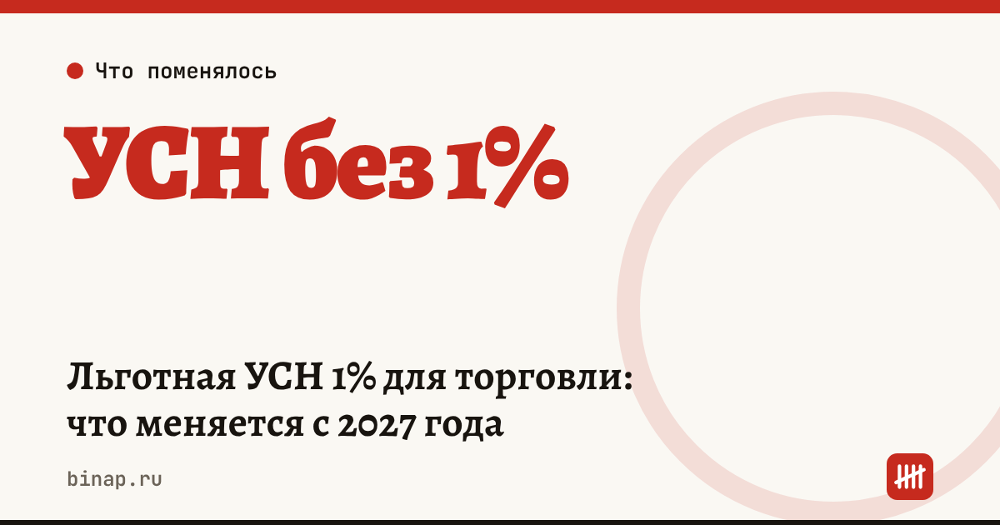

Льготная УСН 1% для торговли: что меняется с 2027 года

С 2027 года торговый бизнес, скорее всего, потеряет пониженные региональные ставки УСН. 19 ноября 2026 года Госдума во втором чтении сократила список видов деятельности, для которых регионы могут снижать ставку, с 88 до 21. Торговли, в том числе на маркетплейсах, в новом списке нет.
Коротко
- Сейчас регионы вправе снижать ставку УСН с 6 до 1% на объекте «доходы» и с 15 до 5% на «доходах минус расходы».
- Список видов деятельности для таких льгот сокращают до 21, по данным «Коммерсанта» — с 88.
- В списке остаются в основном производство и сельское хозяйство, а также НКО.
- Льготу теряют торговля (включая интернет-торговлю, ОКВЭД 47.91), строительство, транспорт, общепит, туризм и ИТ.
- По данным «Ведомостей», правило начнёт действовать с 2027 года. Закон ещё не принят окончательно.
Сроки, изменения и разборы для ИП и самозанятых — каждое утро в Telegram и MAX. Подпишитесь, чтобы не пропустить.
Что это значит
- Кто остаётся с льготой. По данным «Ведомостей», в список вошли обрабатывающие производства (кроме металлургии, химии и нефтепереработки) и сельское хозяйство: растениеводство, животноводство, рыболовство. Среди примеров — производство продуктов, текстиля, одежды и обуви, лекарств, мебели, строительных конструкций, готовых металлических изделий.
- Кто теряет. Торговля, по данным «Опоры России», — это 2,3 млн малых предпринимателей, около 40% от их числа. Сюда же попадают селлеры маркетплейсов, кафе, строители, перевозчики, турагентства и ИТ-компании.
- Почему так решили. Минфин и депутаты объясняют поправку борьбой с налоговой конкуренцией регионов: бизнес регистрировался там, где ставка ниже, а работал в другом месте.
- Список закрепят в Налоговом кодексе. Как отмечают юристы в «Коммерсанте», расширить его потом можно будет только федеральным законом, а не распоряжением правительства.
- Включение в список не гарантирует льготу. Регион всё равно решает сам, снижать ли ставку для вашего вида деятельности.
Сколько это стоит: пример
ИП торгует через маркетплейсы, УСН «доходы», регион даёт ставку 1%. Доход за год — 10 млн ₽ (расчёт редакции, без учёта уменьшения налога на страховые взносы):
| Ставка 1% | Ставка 6% | |
|---|---|---|
| Налог за год | 100 000 ₽ | 600 000 ₽ |
| Разница | — | +500 000 ₽ |
На «доходах минус расходы» при базе 2 млн ₽: 5% — это 100 000 ₽, 15% — 300 000 ₽. Разница 200 000 ₽ (расчёт редакции).
Посчитать налог по обоим объектам можно в калькуляторе УСН, а сравнить объекты поможет статья УСН «доходы» или «доходы минус расходы». Сколько ИП на УСН 6% без сотрудников платит взносов и как они уменьшают налог — в разборе Сколько платит ИП на УСН 6% без сотрудников.
Что сделать сейчас
- Проверьте основной ОКВЭД в выписке из ЕГРИП или ЕГРЮЛ. По нему и будут смотреть, есть ли у вас право на региональную ставку.
- Посмотрите региональный закон: какая ставка у вас сейчас и для каких видов деятельности.
- Пересчитайте налог на 2027 год по ставкам 6% и 15%. Если расходы большие, сравните оба объекта: сменить объект можно только с начала года, поэтому решать нужно до января.
- Заложите разницу в цены и бюджет на 2027 год. Если работаете с маркетплейсами, пересчитайте маржу по каждой категории.
- Следите за третьим чтением. До окончательного принятия список могут поменять.
Селлерам, которым нужен учёт под маркетплейсы, пригодится разбор Онлайн-бухгалтерия для селлера на УСН: как выбрать.
Частые вопросы
Если я торгую в регионе со ставкой 1%, что будет с 2027 года? Если закон примут в нынешней редакции, торговли не будет в списке, по которому регион вправе снижать ставку. Значит, придётся платить по базовой ставке: 6% на «доходах» или 15% на «доходах минус расходы».
Это уже закон? Нет. 19 ноября 2026 года Госдума приняла законопроект во втором чтении. Впереди третье чтение, одобрение Совета Федерации и подпись президента.
Производства это тоже касается? Обрабатывающие производства в основном остаются в списке. Но льготу по-прежнему устанавливает регион: проверьте местный закон.